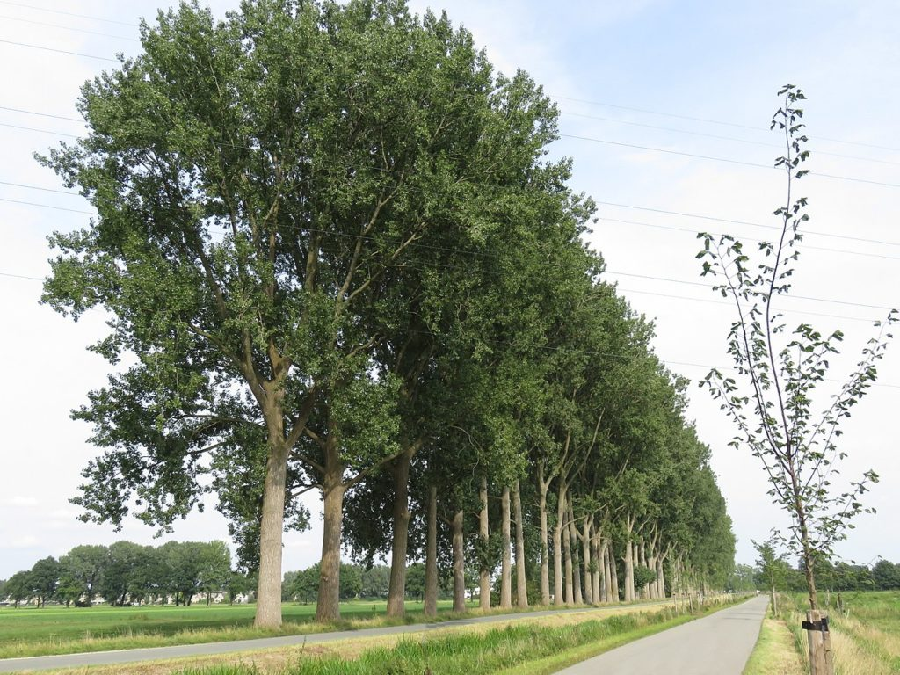
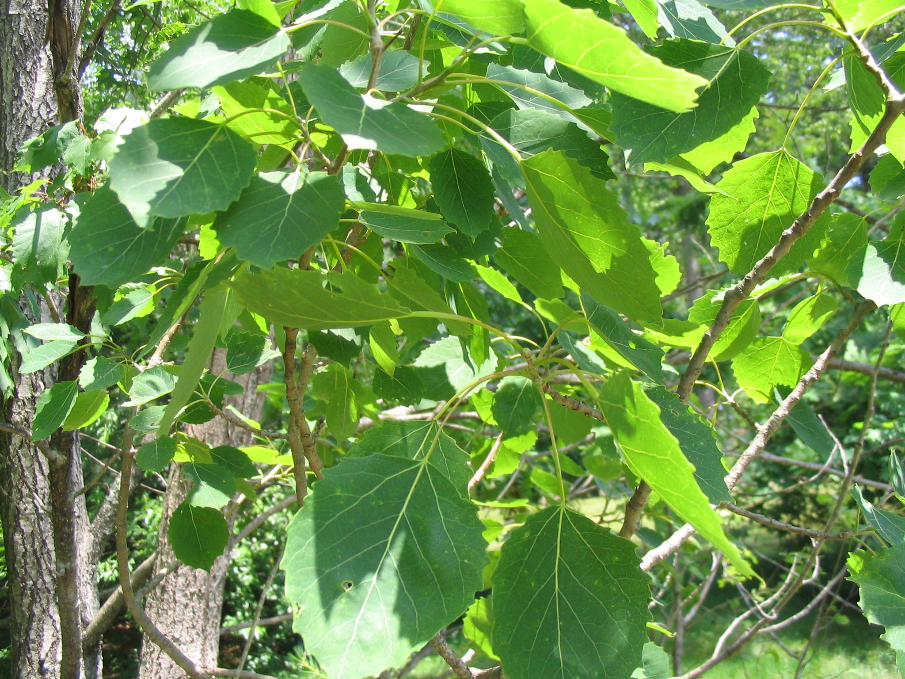
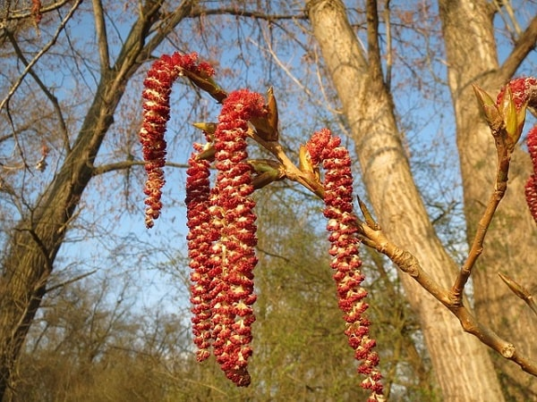

- Familia: Salicaceae (familia de los sauces).
- Tronco: es recto y leñoso, con un diámetro que puede alcanzar hasta 2 metros en árboles maduros. El tronco es generalmente alto y esbelto, proporcionando una estructura vertical prominente.
- Corteza: es lisa y de color verde claro en árboles jóvenes, volviéndose gris y más fisurada con la edad. En algunas especies, la corteza puede presentar una textura áspera y agrietada.
- Copa: es generalmente alta y estrecha, aunque puede variar dependiendo de la especie. En muchas especies, la copa es piramidal o columnar, proporcionando una silueta distintiva.
- Hoja: son simples, alternas y de forma generalmente triangular o romboidal. Son de color verde brillante durante la temporada de crecimiento y cambian a tonos amarillos en otoño antes de caer. Los bordes de las hojas suelen ser dentados.
- Flor: son pequeñas y agrupadas en amentos colgantes que aparecen en primavera antes de que broten las hojas. Las flores masculinas y femeninas se encuentran en amentos separados, generalmente en árboles diferentes (dioicos).
- Fruto: es una cápsula que contiene numerosas semillas diminutas rodeadas de un penacho de pelos finos, lo que facilita su dispersión por el viento. Las cápsulas se abren para liberar las semillas en primavera o principios del verano.
- Usos: El álamo se cultiva por su madera ligera y flexible, que se utiliza en la fabricación de muebles, cajas, papel y productos de madera contrachapada. Además, es ampliamente plantado como árbol ornamental en parques, jardines y alineaciones urbanas debido a su rápido crecimiento y su capacidad para proporcionar sombra. También se utiliza en proyectos de reforestación y estabilización de suelos, especialmente en áreas ribereñas y húmedas.
- Floración: ocurre en primavera, antes de la aparición de las hojas. Los amentos colgantes, que contienen las flores masculinas y femeninas, son discretos pero efectivos para la polinización por el viento.
- Fructificacion: sigue a la floración, con la formación de cápsulas que contienen semillas diminutas con penachos de pelos finos. Las cápsulas maduran y se abren en primavera o principios del verano, liberando las semillas para su dispersión por el viento.
- Reproducción: se reproduce tanto por semillas como por brotes de raíz. Las semillas se cosechan de las cápsulas maduras y se siembran en condiciones adecuadas para germinar. Los álamos también pueden propagarse vegetativamente a través de brotes que emergen de las raíces, lo que permite la formación de colonias.

Hoja

Fruto